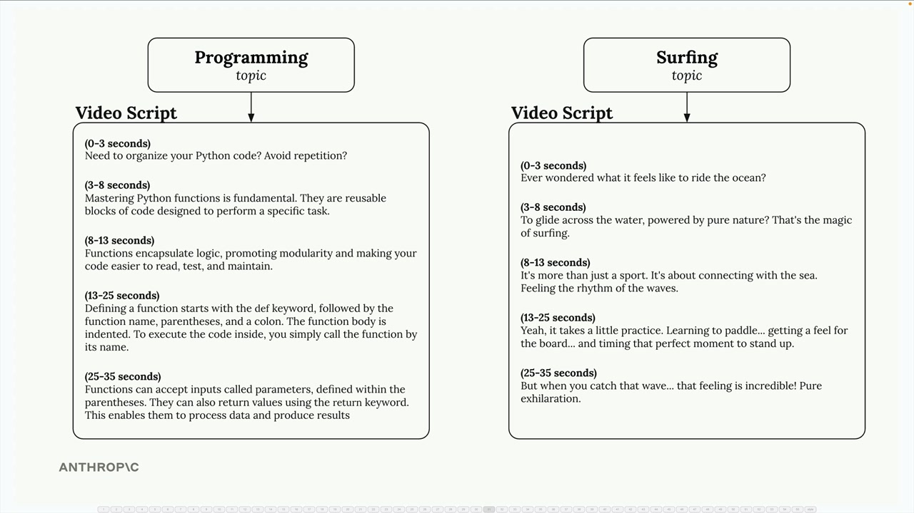
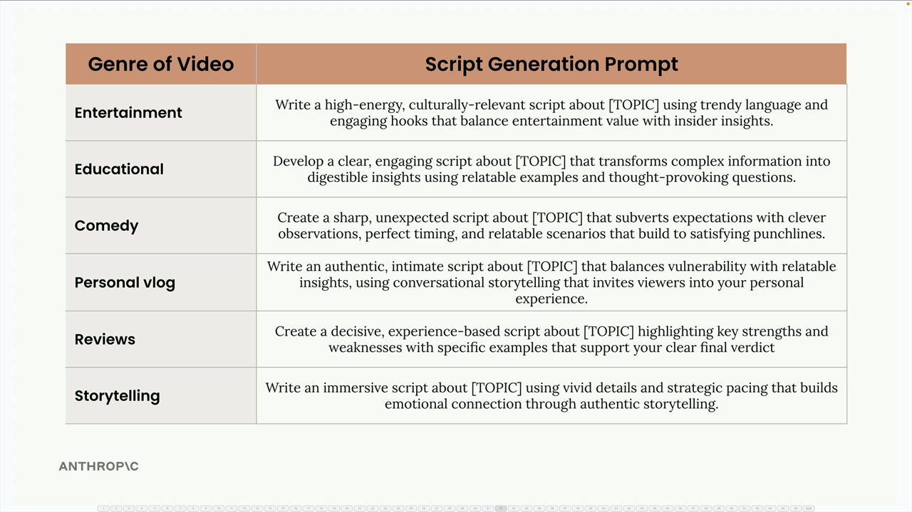
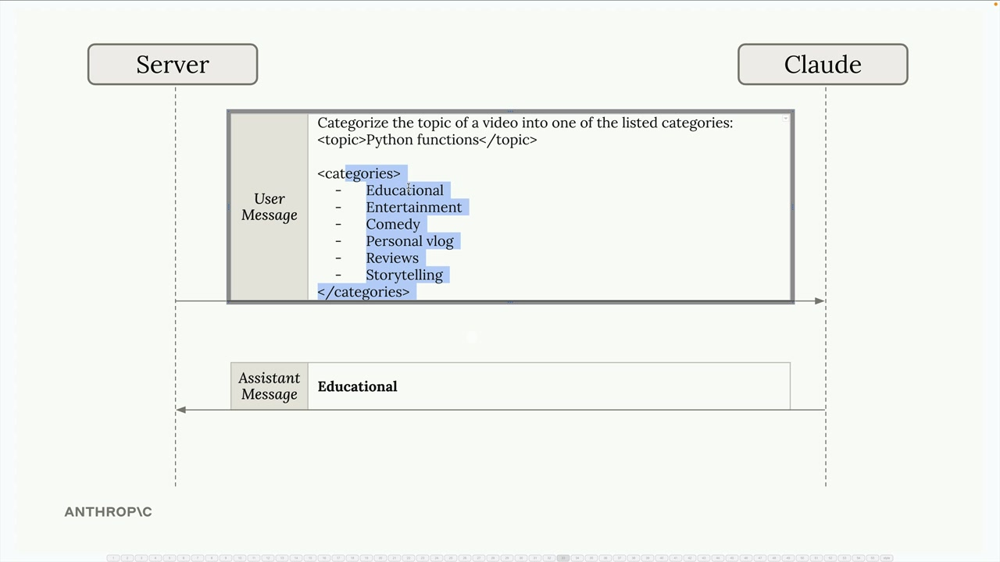
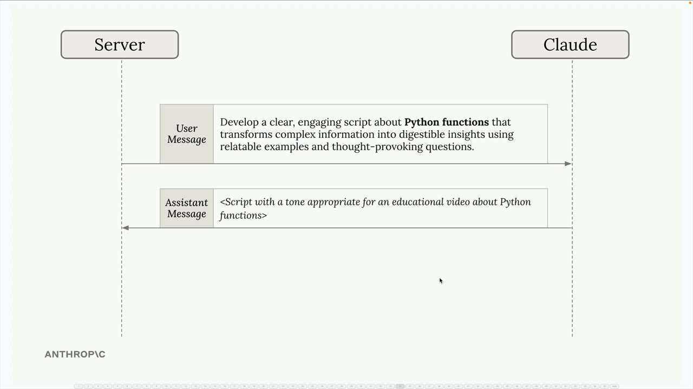
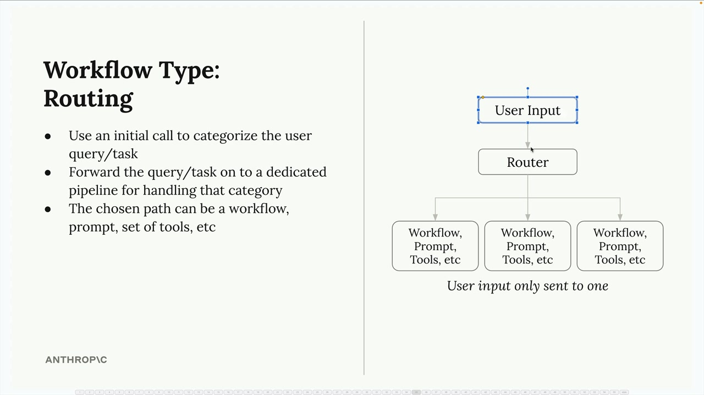

Маршрутизация
Чему научитесь
Видео 3:17 и текст урока
К концу урока вы сможете:
- классифицировать запрос отдельным вызовом Claude;
- направлять запрос в специализированный конвейер;
- понять, когда маршрутизация оправдывает лишний шаг.
Видео и текст урока.
Смотреть урок на Skilljar Routing workflows · 3:17Маршрутизация (routing workflows) решает частую проблему AI-приложений: разные типы запросов пользователей требуют разной обработки. Вместо одного универсального промпта можно классифицировать входящие запросы и направлять их в специализированные конвейеры обработки.
Проблема универсальных промптов
Возьмём инструмент для маркетинга в соцсетях, который пишет сценарии видео по темам пользователей. Пользователь может ввести тему «programming» или «surfing», но результат должен быть совсем разным:

Для темы программирования нужен обучающий контент с понятными объяснениями и определениями. Для сёрфинга лучше подходят развлекательные сценарии, где упор на драйв и зрелищность. Один универсальный промпт не справится с обоими случаями.
Категории контента
Первый шаг — определить, какие типы контента может создавать ваше приложение. Запросы можно разделить по жанрам, например:
- Entertainment (развлечение) — энергичный, актуальный контент с модным языком;
- Educational (обучение) — понятные, увлекательные объяснения с близкими примерами;
- Comedy (комедия) — острый, неожиданный контент с остроумными наблюдениями и чувством ритма;
- Personal vlog (личный влог) — искренний, личный контент с разговорным повествованием;
- Reviews (обзоры) — решительный контент на основе опыта, с сильными и слабыми сторонами;
- Storytelling (истории) — захватывающий контент с яркими деталями и эмоциональной связью.

[TOPIC].Для каждой категории — свой специализированный шаблон промпта. Например, промпт для обучающего жанра может просить Claude «develop a clear, engaging script that transforms complex information into digestible insights using relatable examples and thought-provoking questions» (разработать понятный, увлекательный сценарий, который превращает сложную информацию в легко усваиваемые идеи с помощью близких примеров и вопросов, заставляющих задуматься).
Как маршрутизация работает на практике
Маршрутизация проходит в два шага:
- Классификация — отправляем тему пользователя Claude и просим отнести её к одному из заранее определённых жанров;
- Специализированная обработка — по полученной категории выбираем нужный шаблон промпта и генерируем контент.

Например, если пользователь ввёл тему «Python functions», сначала просим Claude её классифицировать:
Categorize the topic of a video into one of the listed categories: <topic>Python functions</topic> <categories> - Educational - Entertainment - Comedy - Personal vlog - Reviews - Storytelling </categories>
Claude отвечает «Educational», и тогда для генерации самого сценария мы берём шаблон обучающего промпта.

Архитектура маршрутизации
Маршрутизация устроена так:

- ввод пользователя сначала попадает в компонент-маршрутизатор (router);
- маршрутизатор классифицирует запрос первым вызовом Claude;
- в зависимости от категории ввод передаётся в один конкретный конвейер обработки;
- у каждого конвейера могут быть свои workflow, промпты или инструменты, оптимизированные под эту категорию.
Главное: ввод пользователя уходит только в один специализированный конвейер, а не во все. Это позволяет максимально оптимизировать каждый конвейер под его задачу.
Когда применять маршрутизацию
Маршрутизация хорошо работает, когда:
- приложение обрабатывает разные типы запросов, которым нужен разный подход;
- можно чётко определить категории, покрывающие ваши сценарии;
- Claude надёжно справляется с шагом классификации;
- выигрыш от специализированной обработки перевешивает накладные расходы на шаг маршрутизации.
Паттерн особенно ценен для ботов поддержки, инструментов генерации контента и любых приложений, где «правильный» ответ сильно зависит от понимания типа запроса.
Дальше
Следующий урок — агенты и инструменты.
Оригинал урока: Routing workflows.